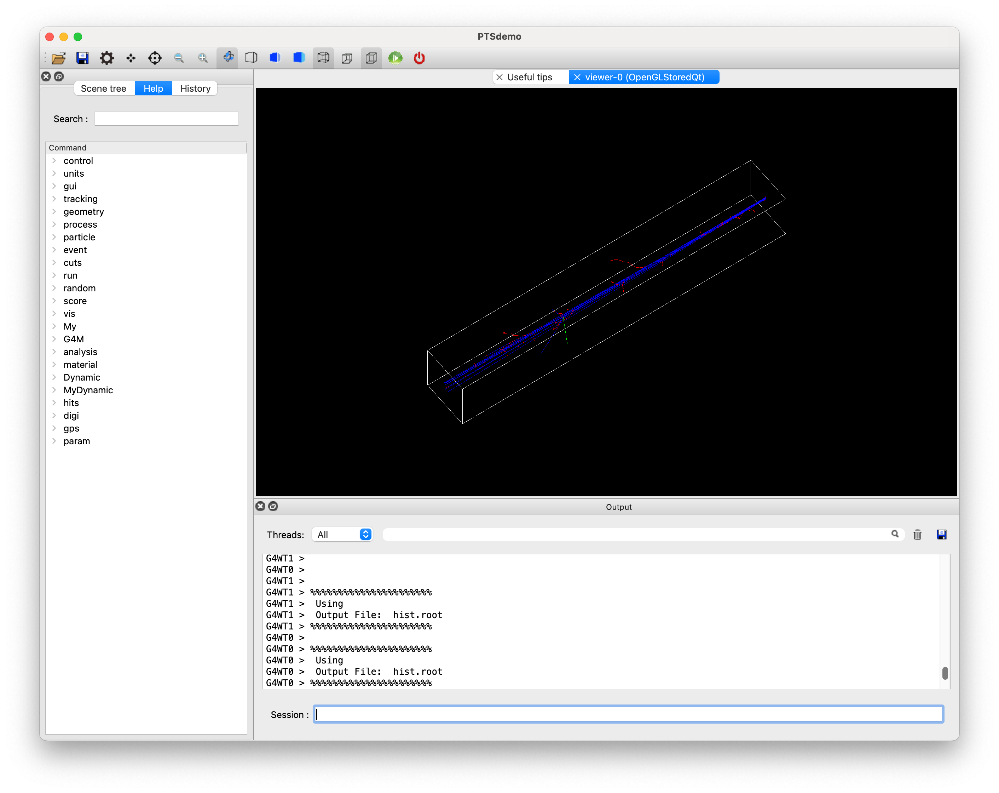

Example A0(基本構成)
例題のシミュレーション空間(治療室)の作成方法を解説し、基本的な設定方法を体験します。
解説概要
物質作成
システム選択
治療室の登録
初期粒子発生器の選択
以下、PTSIMの実行ディレクトリ(例: ~/PTSproject-install/PTSapps/DynamicPort)で作業します。
例題マクロファイル
PTSIMコードに付属するマクロファイルexampleA0.macをコピーして用います。
$ cp ./macros/tut/exampleA0.mac .
実行
$ ./bin/PTSdemo -i exampleA0.mac
治療室だけの空間です。
ビームを打ってみます。
Session: /run/beamOn 10

終了します。
Session: exit
マクロファイルの解説
解説するコマンド部分のみを抜粋して説明します。
1#
2# (PreInit State)
3#
4# Material
5/G4M/Material/create G4_AIR
6/G4M/Material/create G4_WATER
7#
8# PhysicsList
9/control/execute ./macros/common/phys.mac
10#
11# System and module registration
12/G4M/System DynamicPort
13/Dynamic/Module/Room/register 525. 525. 3550. mm
14#
15# Run Initialize
16/run/initialize
17#
18# (PreInit State)
19#
20# Primary particle
21/My/PrimaryGenerator/select GPS
22/control/execute ./macros/common/gps.mac
23#
24#
25#/run/beamOn 10
26#
物質作成
5行目から6行目で物質を作成しています。物質作成は、/G4M/Material/createコマンドで作成します。引数に物質名を与えます。
上記の例では、NISTマテリアルデータベースで事前定義された物質を作成しています。
物質は、ジオメトリ構築前に作成しておく必要があります。
物質作成コマンドの詳細並びにユーザ定義物質の作成については、コマンドリファレンスを参照してください。
外部マクロファイルの呼び出し
/control/executeコマンドは、引数で指定した別のマクロファイルを読み込んで実行します。
このサンプルマクロでは、9行目の物理過程の選択phys.macと22行目で初期粒子の選択gps.macで使用しています。
これらのファイルの内容については、別の例題紹介で説明します。
システムの選択と治療室（ワールドボリューム）の登録
12行目でシステムの選択を行なっています。治療施設に特化したシステムを実装した場合には、/G4M/Systemコマンドで切り替えできるようにPTSIMは設計されています。汎用的なシステムとしては、/G4M/System DynamicPortの一択になります。DynamicPortが選択されることにより、/Dynamic/で始まるコマンドが利用できます。
シミュレーション空間である治療室のシステムへの登録は、13行目の/Dynamic/Module/Room/registerコマンドで行います。引数は各辺の半長とその単位です。 シミュレーション空間のワールドボリュームとなり、その名称はRoomと決められています。デフォルトで治療室の空間はG4_AIRで満たされます。登録後でもRoomのサイズや物質の変更が可能です。Roomの固有コマンドについては、コマンドリファレンスを参照してください。
Run Initialize
モジュールの登録後に、16行目で/run/initializeを実行しています。このコマンド実行によって、Geant4の初期化が行われワールドボリュームが作成されます。このコマンド以前の状態をPreInit>ステート、以後をIdle>ステートと呼びます。
初期粒子発生の選択設定
21行目で初期粒子発生器を/My/PrimaryGenerator/selectコマンドで選択しています。
このサンプルでは、GPS, General Particle Sourceが選択されています。GPSで初期粒子発生条件を設定する固有コマンドは、別のマクロファイルgps.macに記載されています。GPSの詳細は別の例題紹介で説明します。
これらが最小構成の基本コマンドです。